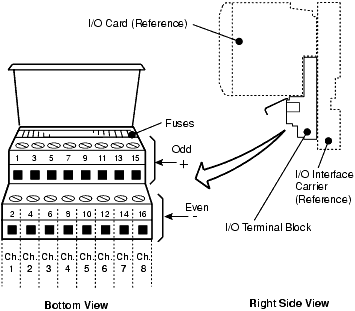

Lesson 04 — Installing the I/O Interface and Cards
Source: DeltaV M-Series Hardware Installation and Reference Manual, Emerson D800001X312, April 2021, pp. 36–39.
With carriers mounted and LocalBus power routed across DIN rails (covered in Lesson 03), the next step is to install the I/O interface — the bridge between your field instruments and the DeltaV controller. This lesson walks you through extender cables, terminal blocks, and I/O card installation, including the redundant configurations available with Series 2 I/O. By the end, you will understand every physical step required to get field signals flowing into the controller.
4.1 Installing Extender Cables
When I/O carriers live on separate DIN rails, they need a way to share LocalBus power. Extender cables accomplish exactly that. These cables connect to one-wide extender cable carriers that sit on the left and right sides of the 2-wide, 4-wide, and 8-wide carriers. The extender cable carries both power and communication signals between carrier groups.
Key Concept — Carrier Alignment for Extender Cables: The 4-wide and 8-wide carriers must be left-aligned when using extender cables. A standard installation uses one extender cable, though dual cables can be used for additional bandwidth or redundancy. For VerticalPLUS carriers, the procedure differs — refer to the "Extending LocalBus Power to Other Carriers" section in the manual.
The installation procedure is straightforward:
Install the one-wide extender cable carriers on the right and left sides by sliding together the 48-pin connectors on the sides of the carriers.
Connect the first end — attach the 44-pin D-shell (male) connector on the extender cable to the top D-shell connector labeled A on the right-side carrier, then fasten the retainer screws.
Connect the second end — attach the other end of the cable to the top D-shell connector labeled A on the left-side carrier, then fasten the retainer screws.
💡 Tip: The 44-pin D-shell connectors use retainer screws — do not skip these. Without them, vibration from the plant environment can gradually loosen the connection, causing intermittent LocalBus communication failures that are extremely difficult to diagnose.
Ref: D800001X312, Section 2.5.7, p. 36
4.2 Installing the DeltaV I/O Interface
The I/O interface installation has three main parts: mounting terminal blocks, connecting field wiring, and inserting I/O cards. You perform this sequence for each carrier in your system. The terminal block provides the physical connection points for field wiring, and the I/O card plugs into both the carrier and the terminal block simultaneously.
4.2.1 Installing an I/O Terminal Block
Each I/O card has a corresponding terminal block. The terminal block mounts directly onto the I/O interface carrier using a tab-and-slot mechanism:
Check key settings on the corresponding I/O card, and set the keys on the I/O terminal block to match. Keying ensures the correct card type can only be inserted into the matching terminal block slot — it is a physical safeguard against mismatches.
Locate the assigned slot on the I/O interface carrier. Place the tabs on the back of the I/O terminal block through the slots on the carrier and push the terminal block upward to lock it into place.
Connect field wiring for the I/O terminal block according to the I/O card wiring diagrams in the "Interface Specifications" section of the manual.
Figure 2-10: I/O terminal block installation — tabs on the back of the terminal block slide through the carrier slots and lock upward into position. (D800001X312, p. 37)
⚠️ Pitfall — Key Mismatch: If the key settings on the terminal block don't match the card you're about to install, the card physically will not seat properly. Always verify key settings before inserting the card. Installing the wrong card type can also cause communication failures that are difficult to diagnose after the fact.

Figure 2-11: I/O terminal block channel assignments — these assignments apply to the standard, fused, and 4-wire terminal blocks. (D800001X312, p. 37)
💡 Tip: Field wiring connections are specific to the I/O card type associated with the terminal block. A 4-20 mA analog input card will have different wiring requirements than a digital input card. Always cross-reference the Interface Specifications section for your specific card type before landing any wires.
Terminal Block Type
Use Case
Channel Assignment Notes
Standard I/O Terminal Block
General-purpose I/O
Refer to card-specific wiring diagrams
Fused I/O Terminal Block
Applications requiring field-side fuse protection
Same channel assignments as standard
4-Wire Terminal Block
4-wire transmitters requiring external power
Same channel assignments as standard
Redundant Terminal Block
Series 2 redundant I/O configurations
Refer to Series 2 wiring diagrams
Ref: D800001X312, Section 2.5.8, pp. 36–37
4.3 Installing an I/O Card
With the terminal block in place and field wiring connected, the I/O card itself slides into the carrier slot. The card connects to both the carrier backplane (for communication and power) and the terminal block (for field signals) in a single push-to-seat motion.
⚠️ Critical Warning — Field Power Voltage: Before installing a card in a carrier slot, always ensure that the bussed field power voltage at the slot matches the field power requirements for the card. Card damage can result during installation if there is a mismatch between the field power voltage at a carrier slot and the card installed in that slot.
The installation steps are:
Locate the assigned slot on the I/O interface carrier.
Align the connectors on the I/O card with the connectors on both the I/O carrier and the I/O terminal block, then push to attach.
Tighten the mounting screw to secure the card in place.
Figure 2-12: I/O card installation — align the connectors on the card with both the carrier and terminal block connectors, then push to seat. (D800001X312, p. 38)
⚠️ Pitfall — Installing a Card Without a Terminal Block: I/O cards are designed to be installed on terminal blocks. If you temporarily install a card on the carrier without a terminal block, be extremely careful to align the pins on the card with the connector on the carrier. Misaligned pins can be bent or damaged, rendering the card useless. The terminal block acts as a guide that helps ensure correct pin alignment.
Step
Action
Verification
1
Verify field power voltage at the slot
Matches card specification
2
Align card connectors with carrier + terminal block
Pins seated correctly, no resistance
3
Push card to attach
Card fully seated, flush with carrier face
4
Tighten mounting screw
Card secured, no movement
Ref: D800001X312, Section 2.5.8, p. 38
4.4 Installing a Redundant Terminal Block
For Series 2 I/O, you can install redundant terminal blocks that provide hot-swap capability. A redundant terminal block spans two carrier slots — this dual-slot design is what allows one card to be replaced while the other continues processing field signals without interruption.
Key Concept — Redundant Slot Pairing: In a redundant I/O configuration, the lower slot number is always odd and the upper slot number is always the next higher even number (for example, slots 1 and 2, or slots 3 and 4). This convention ensures the redundant pair is properly recognized by the controller. Getting this wrong will prevent the redundancy from functioning.
The procedure mirrors the simplex installation with these additions:
Check key settings on both Series 2 cards and set the terminal block keys to match. Both cards must be identical in type and keying.
Locate the assigned slot location, remembering the odd/even slot pairing rule — the lower slot number must be odd and the upper must be the next higher even number.
Place the tabs on the back of the redundant terminal block through the slots on the carrier and push up to lock into place.
Connect field wiring according to the Series 2 card wiring diagrams and redundant terminal block figures in the "Interface Specifications" section.
Ref: D800001X312, Section 2.5.8, p. 39
4.5 Installing a Redundant I/O Card
A redundant I/O card consists of two Series 2 cards installed in a redundant terminal block. Both cards must be identical. The installation is straightforward but requires attention to the slot pairing convention:
Locate the assigned slots on the I/O interface carrier (odd lower, even upper).
Align the connectors on each I/O card with the connectors on both the I/O carrier and the redundant I/O terminal block, then push to attach.
Tighten the mounting screws on both cards to secure them.
💡 Tip: Always read the "DeltaV Series 2 I/O" section before installing redundant I/O. Series 2 cards have specific requirements that differ from standard I/O cards, and failure to follow the correct sequence can result in communication errors between the redundant pair that persist even after the cards are properly seated.
Ref: D800001X312, Section 2.5.8, p. 39
4.6 Summary of I/O Installation Types
The following table summarizes the four I/O installation configurations available in a DeltaV system. Each uses a different terminal block type and has different redundancy characteristics:
Configuration
Terminal Block Type
Cards Required
Slot Pairing
Hot-Swap?
Simplex I/O
Standard terminal block
1 I/O card
Single slot
No
Simplex Fused I/O
Fused terminal block
1 I/O card
Single slot
No
4-Wire I/O
4-wire terminal block
1 I/O card
Single slot
No
Redundant I/O
Redundant terminal block
2 Series 2 cards
Odd (lower) / Even (upper)
Yes
Key Concept — Choosing Your Configuration: Simplex I/O is appropriate for non-critical loops where a brief interruption during card replacement is acceptable. Redundant I/O is required for safety-critical or high-availability applications where zero downtime during maintenance is essential. The choice affects both hardware cost and ongoing maintenance procedures.
Quiz — Lesson 04
Knowledge Check
Q1: Why must the 4-wide and 8-wide carriers be left-aligned when using extender cables?
The extender cable connects to the D-shell connectors labeled "A" on the right and left one-wide carriers. Left-alignment of the 4-wide and 8-wide carriers ensures the connectors are positioned correctly for the extender cable to reach both one-wide carriers without excessive cable tension.
Q2: What can happen if you install an I/O card into a slot where the field power voltage doesn't match the card's requirements?
Card damage can result during installation. The voltage mismatch can damage the card's internal circuitry, potentially rendering it non-functional. Always verify the bussed field power voltage at each slot matches the card specification before installation.
Q3: In a redundant I/O configuration, what is the slot numbering convention?
The lower slot number must always be odd and the upper slot number must be the next higher even number (e.g., slots 1 and 2, slots 3 and 4). This convention ensures the controller properly recognizes the redundant pair.
Q4: What should you verify before inserting an I/O card into a terminal block?
You should verify the key settings on both the I/O card and the terminal block to ensure they match. The keys are a physical safeguard that prevents incorrect card types from being installed in the wrong slot.
Q5: What type of terminal block is required for redundant I/O, and what cards does it accept?
A redundant terminal block is required. It accepts two identical Series 2 I/O cards, one in the lower (odd-numbered) slot and one in the upper (even-numbered) slot. This dual-slot design enables hot-swap capability.
Q6: Why should you avoid installing an I/O card on a carrier without a terminal block?
The terminal block acts as a guide that ensures correct pin alignment. Without it, the card's pins can easily be bent or damaged when pushed into the carrier connector, potentially rendering the card useless. I/O cards are designed to be installed on terminal blocks.
Q7: What are the three types of standard (non-redundant) I/O terminal blocks?
The three types are: (1) Standard I/O terminal block for general-purpose I/O, (2) Fused I/O terminal block for applications requiring field-side fuse protection, and (3) 4-wire terminal block for 4-wire transmitters requiring external power. All three share the same channel assignments.